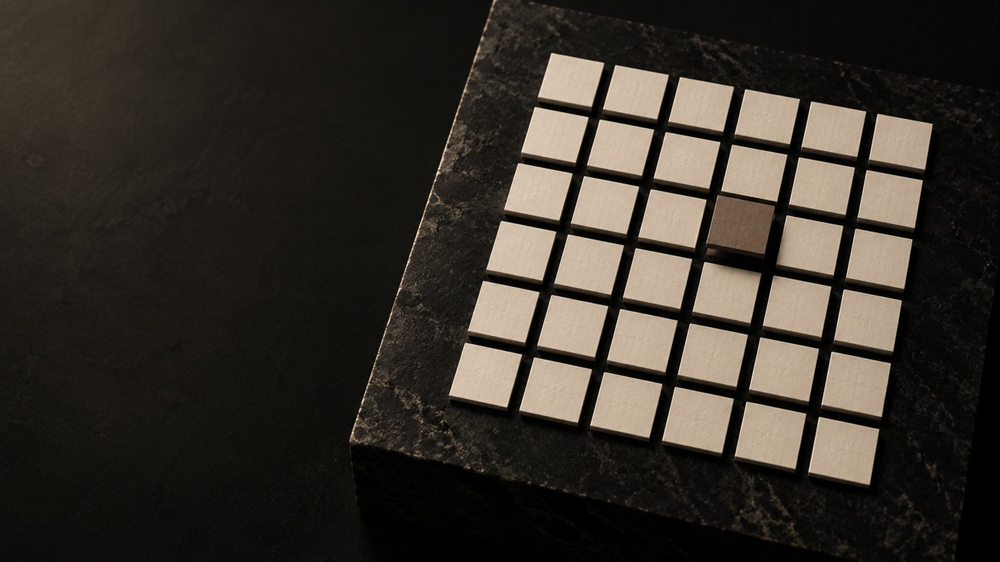

文字化け対策版・2026-10-31。以下は同梱テキストと同じ内容です。日本語の依頼文をコピーし、参考画像を添付してGeminiに送ってください。

文字化け対策版（2026-10-31） 最初にこのファイル、または 00_README.html を開いてください。 同梱のテキストはすべて UTF-8（BOM付き）、ファイル名は英数字です。 日本語が読めないアプリでは 00_README.html をブラウザで開くと、手順・依頼文・修正指示・検品表をまとめて読めます。 Geminiに送るのは 01_prompt_ja.txt の本文と reference-tiles.png です。 # Gemini用 クルーアセント動画制作依頼 Google AI Pro利用者向け。2026-10-29作成。 ## 使い方 1. このZIPをパソコンで展開します。 2. Geminiで「動画を作成」を開きます。生成モデル名やメニュー位置は更新されるため、画面に表示される動画作成機能を使ってください。 3. `reference-tiles.png` を添付します。これが構図の正本です。 4. `01_prompt_ja.txt` の全文をコピーして送ります。英語を使う場合は `02_prompt_en.txt` のみを使い、2本を同時に貼る必要はありません。 5. 生成された動画をダウンロードして確認します。生成完了の表示だけでは合格にしません。 6. 問題があれば、`03_revision_prompts_ja.txt` の該当部分を使い、問題の動画も添付して修正を依頼します。 7. 合格したMP4を `12-video-tiles.mp4` として保存します。ポスターは同梱の `12-video-tiles-poster.png` を使用できます。生成された動画の冒頭が参考画像と異なる場合は、先に動画を修正してください。 ZIPそのものの読み取りに依存しません。展開した画像を添付し、テキストを貼り付ける方法です。参考画像は1枚のみ添付すると、構図の解釈がぶれにくくなります。 ## 納品対象 - 横16:9、8秒、音声なし、MP4。 - 解像度は1920×1080を希望。画面で1080pが選べる場合は選択し、実際の出力解像度を確認してください。 - 開始と終了で同じ構図・明るさへ戻るループ。 - 36枚のタイル・台・カメラを固定。光を左から右へ動かす。 - 茶色のタイル1枚だけ、ごく小さく浮いて元に戻る。 - 人物、文字、数字、ロゴ、追加物なし。 ## Proプランについて Gemini公式にはGoogle AIプラン等を条件とする動画作成機能があります。プランの範囲内で画面に表示される機能を使用してください。生成回数・待ち時間・選択可能な画質はアカウント画面で確認します。このZIPはAPIキーや有料APIの設定を要求しません。 ## 検品 `04_checklist_ja.txt` に沿って、最初・中間・最後のコマを確認してください。生成AIだけで厳密な位置固定や完全なループが必ず成立するわけではありません。不合格なら修正を依頼します。 ## 公式情報 - https://support.google.com/gemini/answer/16126339?hl=ja 画像はクルーアセント用に生成した静物素材です。実在する事務所やスタッフの撮影映像として表示しないでください。
添付画像を構図の正本として、Webサイト背景用の動画を1本、実際に生成してください。制作方法の説明やコード、静止画の連作ではなく、ダウンロードできるMP4動画が必要です。 【納品】 横16:9、8秒、音声なし、希望解像度1920×1080。ファイル名12-video-tiles.mp4。滑らかに繰り返せるループです。 【場面を固定】 添付画像と同じ黒い石の台、6列×6段で正確に36枚の正方形の紙のタイル。生成り色35枚とブラウン1枚。カメラの位置・角度・焦点距離・画角、台、タイルの列と間隔は、動画全体を通して固定します。パン・ズーム・回転・視差・手ぶれは一切入れません。添付画像の暗い左側の余白も保ちます。 【動き】 左上から入る細く柔らかな暖色の光の帯が、タイルの上を左から右へゆっくり横切ります。光以外の35枚のタイルは一切動きません。 ブラウンのタイル1枚だけ、光が近づいたときに数ミリ程度そっと浮き上がり、光が過ぎると同じ位置・同じ角度・同じ高さへ戻ります。上下のみの微小な動きです。左右移動、回転、拡縮、色変化、別のタイルへの入れ替わりはさせません。 【8秒の流れ】 0〜0.5秒：添付画像の状態で静かに始まる。 0.5〜6.5秒：光が左から右へ滑らかに通過。ブラウンのタイルは光が通過する間だけ小さく浮いて戻る。 6.5〜7.5秒：光が右へ抜け、元の照明へ滑らかに戻る。 7.5〜8秒：開始時と同じ構図・位置・照明。ループの継ぎ目で明るさや位置を跳ばさない。 【見た目】 静かで上質な実写の静物写真。黒#000000と濃い炭色が大部分、差し色は落ち着いたブラウン#7B6B5Aと生成り#EEE9E1。紙と黒い石の質感を保つ。光は控えめで、画面全体の露出を明滅させない。強い光条、ネオン、過度な光沢、CG風の質感にしない。 【禁止】 人物・顔・手・体、文字、数字、ロゴ、刻印、画面、植物、カップ、追加の小物。タイルの枚数変更、列のゆがみ、紙の変形、台や背景の変形、カメラ移動、黒い帯の追加。光の色を派手にしない。 【出力前に確認】 36枚の数と6×6の配置、ブラウン1枚だけ、カメラと台の固定、35枚の静止、ブラウンの上下動と原位置への復帰、開始・終了の一致、8秒・無音・16:9を確認してください。機能上できない項目があれば、実現したと断言せず、その制約を明示してください。プロンプトや生成コードの提示だけを、動画の納品として扱わないでください。
Generate one actual downloadable MP4 video using the attached photograph as the authoritative composition reference. Do not substitute production advice, code, a storyboard, or a sequence of still images for the requested video. DELIVERY: 8 seconds, landscape16:9, silent, ideally1920x1080, filename12-video-tiles.mp4. Seamless looping website background. LOCK THE SCENE: Match the reference black stone plinth, exactly SIX columns by SIX rows of square paper tiles:35 ivory tiles and ONE muted brown tile. Lock camera position, angle, focal length, framing, plinth position, grid spacing, and all horizontal tile positions throughout. Preserve the dark negative space on the left. No pan, zoom, orbit, shake, or parallax. MOTION: A narrow soft warm band of upper-left window light passes slowly from left to right across the grid.35 ivory tiles remain completely still. Only the brown tile rises very slightly, by a few millimeters, as the light reaches it, then gently settles back to its exact original position, angle, and height. Vertical movement only: no lateral drift, rotation, scaling, swapping, or color changes. TIMELINE:0–0.5s: begin in the reference state.0.5–6.5s: the light travels steadily left to right; the brown tile rises and returns as the light passes.6.5–7.5s: the light exits right and illumination smoothly returns to the reference state.7.5–8s: hold the same composition and illumination as the beginning, so the loop has no jump or flash. LOOK: Quiet premium editorial still-life photography. Predominantly black#000000 and deep charcoal; muted brown#7B6B5A and ivory paper#EEE9E1. Tactile natural paper and matte stone. Keep exposure stable; do not brighten or darken the whole frame in pulses. No neon, bloom, excessive gloss, or CGI appearance. EXCLUDE: People, hands, faces, bodies, words, letters, digits, logos, engravings, screens, plants, cups, extra objects, tile-count changes, warped rows, melting paper, changing stone geometry, appended black panels, camera movement. CHECK BEFORE DELIVERY: Exactly36 tiles in6×6, only one brown tile; stationary camera/plinth/35 ivory tiles; subtle vertical rise and exact return of the brown tile; matching beginning and ending;8 seconds;silent;16:9. State any tool limitation honestly. Do not present a prompt or code alone as a completed video.
修正時は、参考画像と不合格の動画を添付し、該当する文を送ってください。 【構図が動く】 台・背景・タイルの位置が途中でずれています。カメラと場面を完全固定し、パン・ズーム・回転・視差を取り除いて作り直してください。動かすのは光と、ブラウンのタイル1枚のわずかな上下動だけです。 【タイルの枚数が変わる】 タイルの数または並びが変わっています。最初から最後まで正確に6列×6段の36枚、ブラウンは1枚だけに固定してください。タイルの生成・消失・入れ替わりをなくしてください。 【タイルが浮かない・動きすぎる】 ブラウン1枚だけ、光が通る間に数ミリ程度そっと上がり、同じ場所と高さに戻る動きを付けてください。回転や横移動は不要です。他の35枚を動かさないでください。 【明るさが跳ぶ】 画面全体の露出が急に変わっています。背景の明るさを保ち、狭く柔らかな光の帯だけを左から右へ連続的に動かしてください。点滅や白飛びをなくしてください。 【ループがつながらない】 終了時のタイルの位置・角度・高さ、台・カメラ・照明を開始時と一致させてください。最終0.5秒は開始時の状態に戻し、繰り返し時の跳びをなくしてください。 【余計なものが入る】 参考画像にない人物・文字・数字・ロゴ・小物を除去してください。台と36枚のタイル以外の物を追加しないでください。 【動画ではない出力】 必要なのは実際に再生・ダウンロードできるMP4です。静止画、コード、手順書ではありません。現在の動画生成機能で実行してください。実行できない場合は、その理由を明示してください。
# 動画の受入チェック 生成AIの自己申告ではなく、保存したMP4を再生して確認します。 | 項目 | 合格条件 | |---|---| | ファイル | 実際に再生できるMP4、8秒、横16:9、音声なし | | 解像度 | 希望1920×1080。実出力を確認し、異なる場合は記録 | | カメラ | 冒頭・中間・末尾で固定。パン・ズーム・回転なし | | 台 | 角や端の位置が変わらない | | タイル | 全時間を通して6×6=36枚、ブラウン1枚 | | 静止部分 | 35枚のタイルがずれず、伸び縮みしない | | 動く部分 | ブラウン1枚だけがわずかに上下し、元の場所へ戻る | | 光 | 左から右へ滑らかに通過。明るさが突然変わらない | | ループ | 最初と最後の場面・露出が一致。連続3回再生して跳ばない | | 禁止物 | 人物・手・文字・数字・ロゴ・余計な小物なし | | 掲載方法 | 生成した静物イメージとして使用。実在の事務所映像と誤認させない | 最低限、0秒・2秒・4秒・6秒・終了直前を静止して比較してください。画角を固定し、ブラウンの上下動を除く部分を半透明で重ねると位置ずれを発見しやすくなります。 静止画6枚を並べただけのスライドショーは、今回の動画の合格条件を満たしません。